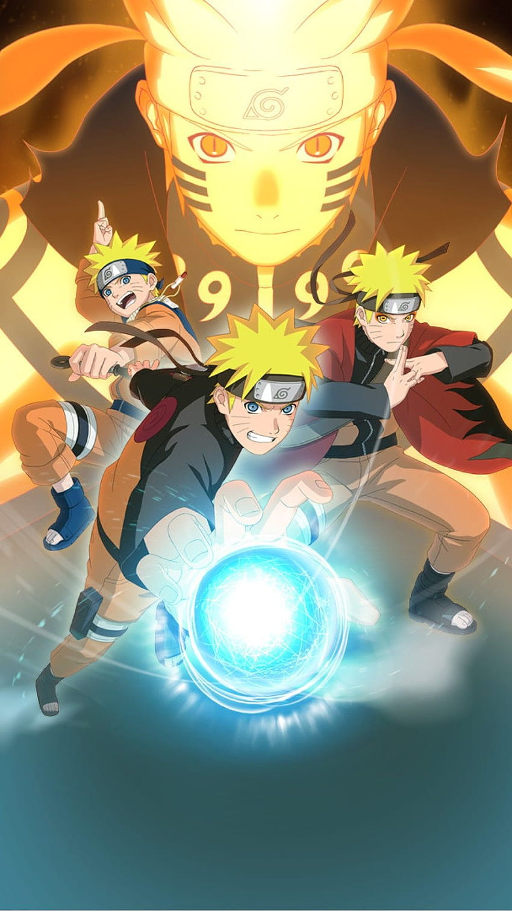
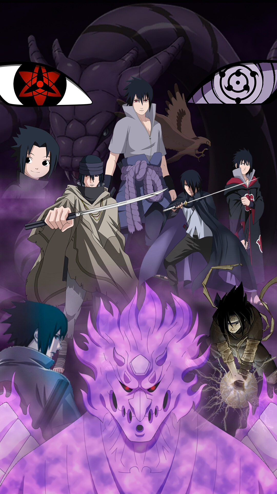
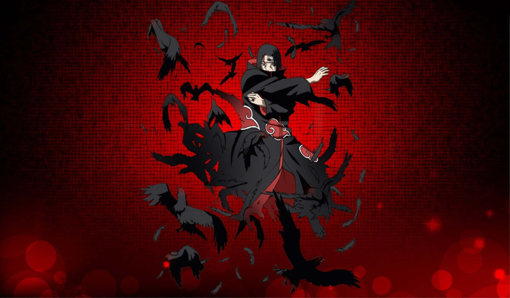
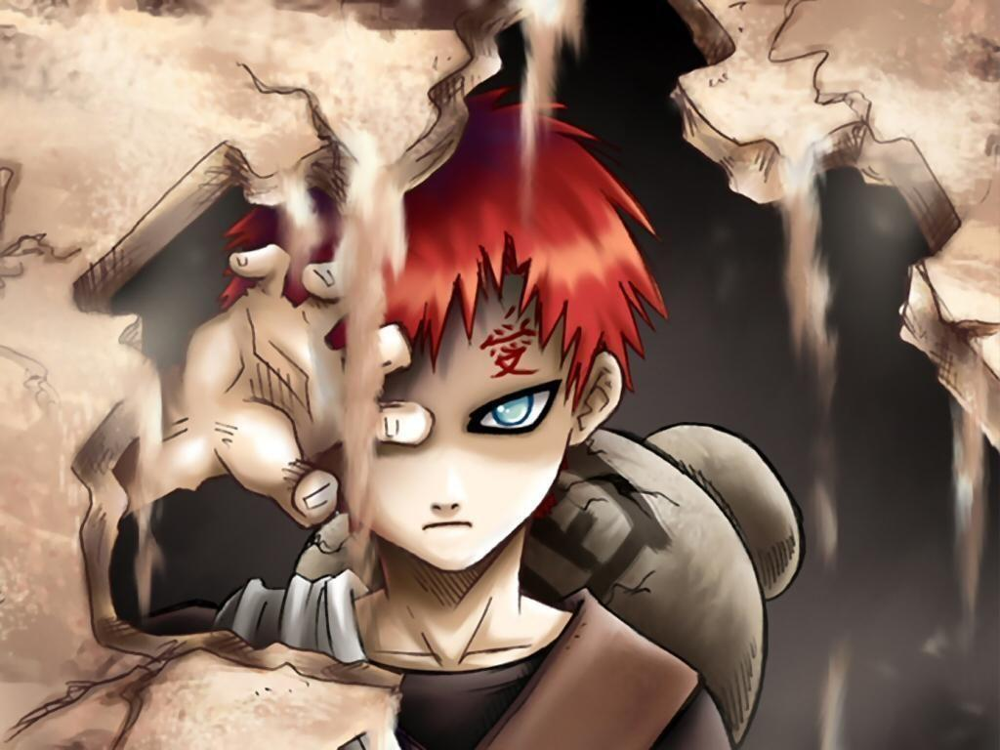

Naruto Uzumaki
Naruto Uzumaki, the central character of the Naruto series, is a young ninja whose indomitable spirit and unwavering determination make him an iconic figure in the world of anime and manga. Born as an orphan and carrying within him the spirit of a powerful nine-tailed fox demon, Naruto faced prejudice and loneliness throughout his early life. However, his dream of becoming the Hokage, the leader of his village, and his relentless pursuit of acceptance fueled his journey. Naruto's defining trait is his never-give-up attitude, and he's known for his catchphrase, "Believe it!" Over the course of the series, Naruto matures from a mischievous troublemaker into a skilled ninja and a symbol of hope for those around him. His loyalty to his friends, ability to forgive even his greatest enemies, and his unbreakable bonds with fellow ninjas exemplify the core themes of friendship and perseverance that define his character.
Sasuke Uchiha
Sasuke Uchiha is a complex and enigmatic character in the Naruto series. Descended from the prestigious Uchiha clan, Sasuke is a prodigious young ninja with exceptional skills and a tragic past. His character is defined by a relentless desire for vengeance against his older brother, Itachi, who had slaughtered their entire clan. This burning vendetta drives Sasuke to seek power and strength above all else, leading him down a dark and treacherous path. Over the course of the series, Sasuke's character undergoes profound transformations, oscillating between moments of isolation and connection with his teammates, especially Naruto. His internal struggle, inner turmoil, and the conflict between his pursuit of revenge and his growing bond with Naruto and other friends make Sasuke one of the most compelling and morally ambiguous characters in the Naruto universe. Ultimately, Sasuke's character arc is a journey of self-discovery, redemption, and seeking a path to atonement for his past actions.
Itachi Uchiha
Itachi Uchiha is a captivating and mysterious character within the Naruto series. Born into the renowned Uchiha clan, Itachi possesses prodigious talent as a ninja and is initially perceived as an enigmatic antagonist due to his involvement in the tragic massacre of his clan. However, as the series unfolds, his true motives and complex character are gradually unveiled. Itachi's actions, driven by a profound sense of responsibility and a desire to protect his younger brother, Sasuke, are marked by profound sacrifice and heartache. He becomes a symbol of selflessness, as he carries the burden of being a rogue ninja for the sake of the village. Itachi's character challenges traditional notions of heroism and villainy, making him one of the most intriguing and morally intricate figures in the Naruto universe. His legacy and the impact of his choices reverberate throughout the series, highlighting the themes of sacrifice and familial bonds.
Gaara of the Desert
Gaara of the Desert, also known as Gaara, is a captivating and transformative character within the Naruto series. Initially introduced as a formidable antagonist with a ruthless and uncontrollable nature, Gaara's character is shrouded in darkness due to a traumatic childhood marked by loneliness and fear. Born with the spirit of a malevolent sand demon sealed within him, Gaara's life is a constant battle against his inner turmoil and the hostile world around him. However, as the series progresses, Gaara's character undergoes a remarkable evolution. He experiences moments of empathy and connection with others, eventually finding redemption and purpose in protecting his village and forging genuine bonds with fellow ninjas, particularly Naruto and his friends. Gaara's transformation from a feared adversary to a respected leader is a testament to the series' theme of overcoming one's past and the profound impact of friendship and understanding. His journey exemplifies the power of change and the resilience of the human spirit, making him one of the most compelling characters in the Naruto universe.